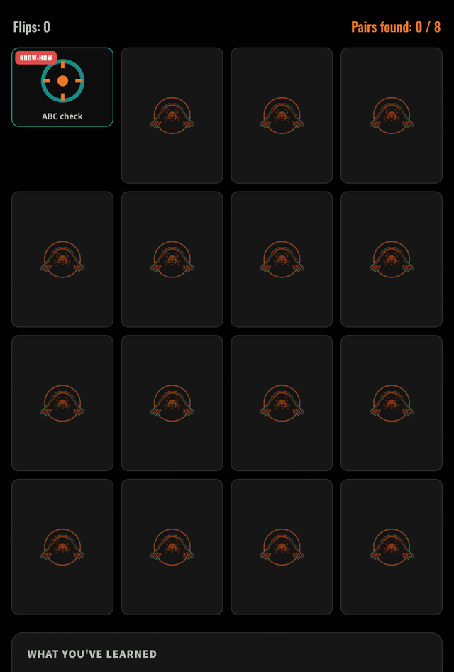
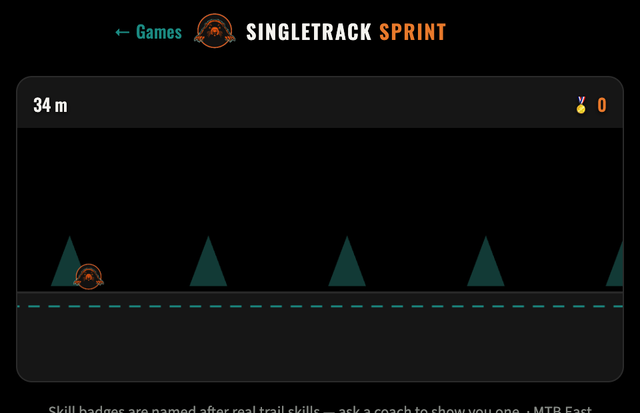
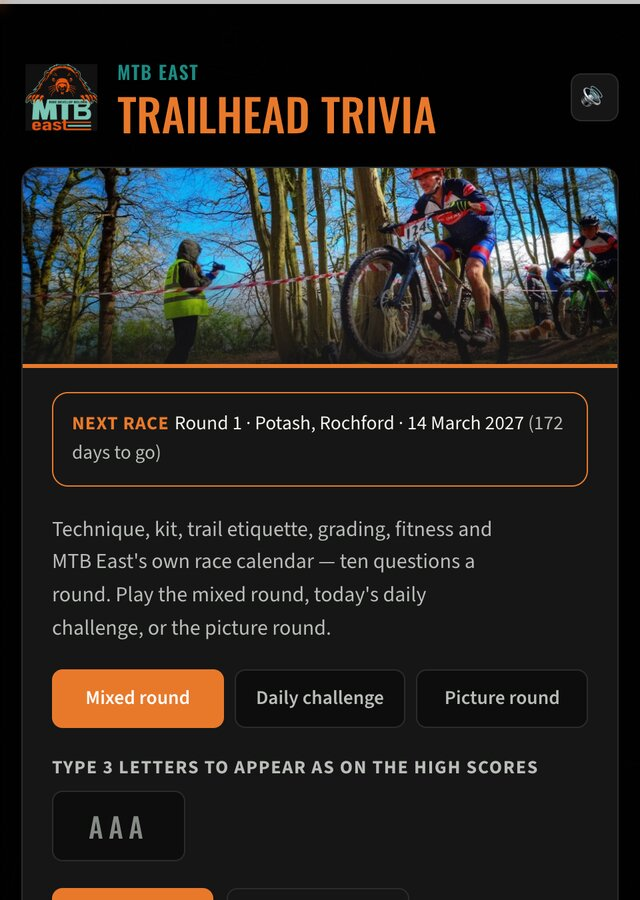
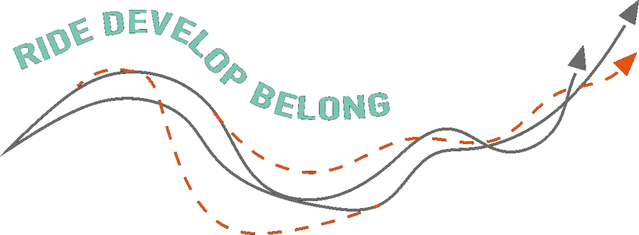

Free mini-games from MTB East CIC — built for young riders, and a couple that anyone can play. No accounts, no cost, no catches.

A relaxed memory game — flip cards, find pairs, and pick up a real fact about MTB East and mountain biking each time you match one. No clock, no pressure, no losing.

An endless trail runner — jump roots, duck branches, dodge puddles, and collect skill badges named after real trail-riding skills as you go.

200+ questions on technique, kit, trail etiquette, grading and MTB East's own race calendar, across Mixed, Daily Challenge and Picture rounds.
More games are on the way — this page grows as we build them.
← Back to Sofa to Singletrack